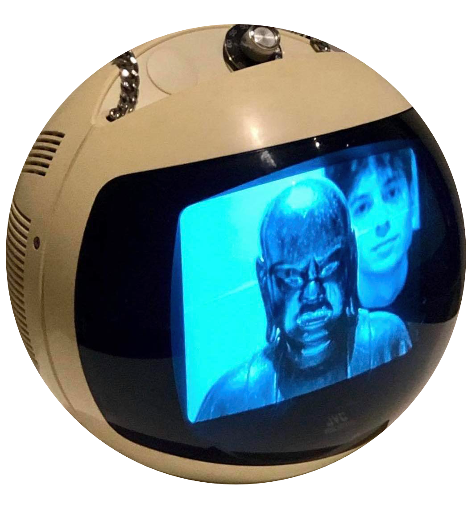

Welcome!
I am a Stockholm-based financial analyst turned software developer, passionate about embedded system and game development.
Presently, I am studying at Chas Academy where i focus on C/C++ system devlopment,

EMBEDDED DEVELOPMENT
PROJECT MARCAI
SENSOR BASED MUSIC
Coding, sourcing and planning for a project focused on coding in a bare metal environment for a project that generates AI generated music based on sensory data.